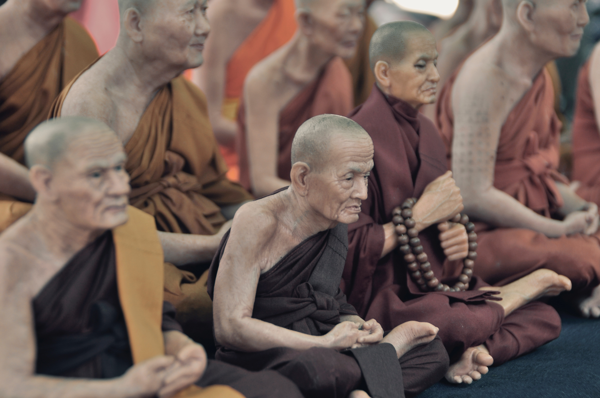

고통의 바다를 건너다. 나는 괴로움을 설하고 괴로움의 원인을 설하며, 괴로음의 소멸을 설하고 괴로움의 소멸에 이르는 길을 설하느니라. 
지혜도 깨달음도 없다. 공의 세계에는 지혜도 깨달음도 없는 것이요, 깨달음을 얻지 못한 것도 없느니라.(석가가 보리수 아래에서 깨달음을 얻고 난 후 제자들에게)
"아제아제 바라아제 바라승아제 보리사바하"(가세 가세 건너가세, 함께 건너가 깨달음을 이루세)